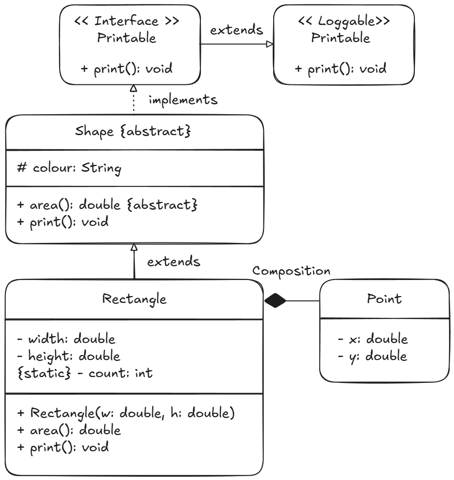

Class Inheritance, super Chaining & Visibility
1. Definitions Reference
- Inheritance: An “is-a” relationship where a subclass acquires accessible fields and methods from a superclass.
- Superclass: A class containing shared state and behaviour extended by one or more subclasses.
- Subclass: A class that extends a superclass, inheriting accessible members and adding or overriding behaviour.
- Abstract Class: A class declared with
abstract classthat can define state, constructors, and abstract methods, but cannot be directly instantiated. - Method Overriding: Redefining an inherited instance method in a subclass with the identical signature to provide specific behaviour.
- Method Overloading: Defining multiple methods within the same class with identical names but differing parameter lists.
- Package: A namespace grouping related classes and interfaces to prevent naming collisions and enforce access boundaries.
2. Inheritance Rules & Structural Invariants
- Direct Single Inheritance Only: A Java class cannot
directly extend two superclasses simultaneously
(
class C extends A, Bis a compile-time error). - Transitive Multiple Inheritance: A class can extend
multiple superclasses transitively through a linear chain
(
class C extends Bwhereclass B extends A), inheriting all accessible ancestors’ members. - Constructors Are Not Inherited: A subclass does not inherit constructors from its superclass. It must declare its own constructors and delegate explicitly or implicitly to the superclass constructor.
- Constructor Delegation Failure: If a superclass
defines any explicit constructor with arguments, the compiler does not
generate a default no-argument constructor. If the subclass fails to
call
super(args)explicitly, the compiler insertssuper(), triggering a compile-time error. - Positioning Rule: An explicit
super(...)orthis(...)call must be the absolute first statement in a constructor body.
Incomplete Abstract Implementation Trap
- Rule: If a subclass inherits abstract methods from
an abstract superclass (or interface) and does not provide a concrete
implementation body for every single one of them, that
subclass MUST be declared
abstract. - Trap: Attempting to declare an intermediate class
without the
abstractmodifier when any inherited abstract method remains un-implemented causes an immediate compile-time error (Class must either be declared abstract or implement abstract method).
Inheritance Misuse Trap (Subclassing vs Composition)
- Anti-pattern: Creating
class Circle extends Pointorclass Cylinder extends Circlemerely to reuse fields (x,y,radius) violates the is-a relationship and LSP. - Formula Check: Ask “Is Subclass strictly a
Superclass?”
- A Circle is not a Point; a Circle has a Point (center).
- A Cylinder is not a Circle; a Cylinder has a Circle (base).
- Verdict: Use Composition (containment via instance fields), never Inheritance, when the relationship represents whole-part or attribute containment rather than true taxonomic specialization.
3. Method Overriding & Dispatch Mechanics
The Three Modes of Overriding
- Replacement: Completely replacing the superclass method’s behaviour by providing a new body without invoking the parent version.
- Refinement (Augmentation): Reusing and extending
superclass logic by invoking
super.methodName()inside the override and adding new statements. - Implementation: Providing the concrete method body
for an inherited
abstractmethod defined in an abstract superclass or interface.
Dispatch Mechanics & Constraints
- Method Lookup Sequence: When a message is
dispatched to an object, lookup begins at the actual object’s class,
traverses up to the immediate superclass, and continues up through each
ancestor until a matching method is found or the hierarchy terminates at
Object(triggering an error). - Signature Matching: Overriding requires an exact match in method name, number of parameters, and parameter types.
- Covariant Return Types: An overriding method may declare a return type that is a subtype of the superclass method’s return type.
- Visibility Constraint: An overriding method cannot
reduce access visibility (e.g., overriding a
publicmethod withprotected, package-private, orprivatecauses a compile-time error). - Invoking Parent Behaviour
(
super.method()): To reuse superclass logic inside an override, callsuper.method(). Callingmethod()orthis.method()inside the override results in infinite recursive dispatch and a runtimeStackOverflowError. finalandstaticConstraints: Afinalmethod cannot be overridden. Astaticmethod cannot be overridden; re-declaring it in a subclass hides it.
4. Visibility Modifiers & Package Boundaries
| Modifier | Same Class | Same Package | Subclass (Outside Package) | Unrelated Class (Outside) | UML Notation |
|---|---|---|---|---|---|
public |
Yes | Yes | Yes | Yes | + |
protected |
Yes | Yes | Yes | No | # |
| package-private (no modifier) | Yes | Yes | No | No | (none) |
private |
Yes | No | No | No | - |
- Package-Private Boundary: A member with no modifier is accessible strictly within classes belonging to the same package namespace. Subclasses located in a different package cannot access package-private members.
- Protected Access Quirk: In a different package, a
subclass can access inherited
protectedmembers only through references of its own type (or subtypes), not directly through an arbitrary parent-type reference.
5. UML Reference Diagram

// Base Point Class
class Point {
protected int x;
protected int y;
public Point(int x, int y) {
this.x = x;
this.y = y;
}
public void setPoint(int x, int y) {
this.x = x;
this.y = y;
}
public int getX() { return x; }
public int getY() { return y; }
@Override
public String toString() {
return "[" + x + ", " + y + "]";
}
}
// Base Abstract Class
abstract class Account {
protected String accountId;
private double balance;
// Explicit superclass constructor
public Account(String accountId, double initialBalance) {
this.accountId = accountId;
this.balance = (initialBalance >= 0) ? initialBalance : 0.0;
}
public double getBalance() {
return balance;
}
// Non-abstract method intended for extension
public void displaySummary() {
System.out.println("Account: " + accountId + ", Balance: " + balance);
}
// Abstract methods: forces concrete subclasses to implement
public abstract double calculateInterest();
public abstract double calculateTax();
}
// Partial Implementation: Must be declared abstract because calculateTax() is omitted
abstract class IntermediateSavingsAccount extends Account {
protected double interestRate;
public IntermediateSavingsAccount(String accountId, double initialBalance, double interestRate) {
super(accountId, initialBalance);
this.interestRate = interestRate;
}
// Mode 3: Implementation of calculateInterest()
@Override
public double calculateInterest() {
return getBalance() * interestRate;
}
}
// Concrete Subclass: Implements remaining abstract method
class SavingsAccount extends IntermediateSavingsAccount {
public SavingsAccount(String accountId, double initialBalance, double interestRate) {
super(accountId, initialBalance, interestRate);
}
// Mode 3: Implementation of remaining calculateTax()
@Override
public double calculateTax() {
return getBalance() * 0.05;
}
// Mode 2: Refinement (calling super.displaySummary() to augment parent logic)
@Override
public void displaySummary() {
super.displaySummary();
System.out.println("Interest Rate: " + interestRate);
}
}
// Level 2 Subclass: Mode 1 Replacement
class FixedDepositAccount extends SavingsAccount {
public FixedDepositAccount(String accountId, double initialBalance, double rate) {
super(accountId, initialBalance, rate);
}
// Mode 1: Replacement (completely discards super implementation)
@Override
public void displaySummary() {
System.out.println("[FD Summary] ID: " + accountId + " | Balance: " + getBalance());
}
}// Exam Traps: Constructor Delegation Failures & Incomplete Abstract Implementations
class ParentNoDefault {
ParentNoDefault(int val) {}
}
class ChildTrap extends ParentNoDefault {
// Compile-time error if written as:
// ChildTrap(int val) { } // Implicit super() fails because ParentNoDefault() does not exist
ChildTrap(int val) {
super(val); // Mandatory explicit call
}
}
abstract class BaseAbstract {
abstract void taskA();
abstract void taskB();
}
// TRAP: Fails to compile if 'abstract' keyword is missing because taskB() is un-implemented
abstract class IncompleteChild extends BaseAbstract {
@Override
void taskA() {
System.out.println("Task A complete");
}
// taskB() is left unimplemented; class MUST be abstract
}
class VisibilityTrapParent {
public void execute() {}
}
class VisibilityTrapChild extends VisibilityTrapParent {
// Compile-time error: Cannot reduce visibility of inherited public method
// @Override
// protected void execute() {}
@Override
public void execute() {
// super.execute(); // Valid
// execute(); // TRAP: Triggers infinite recursion and StackOverflowError at runtime
}
}